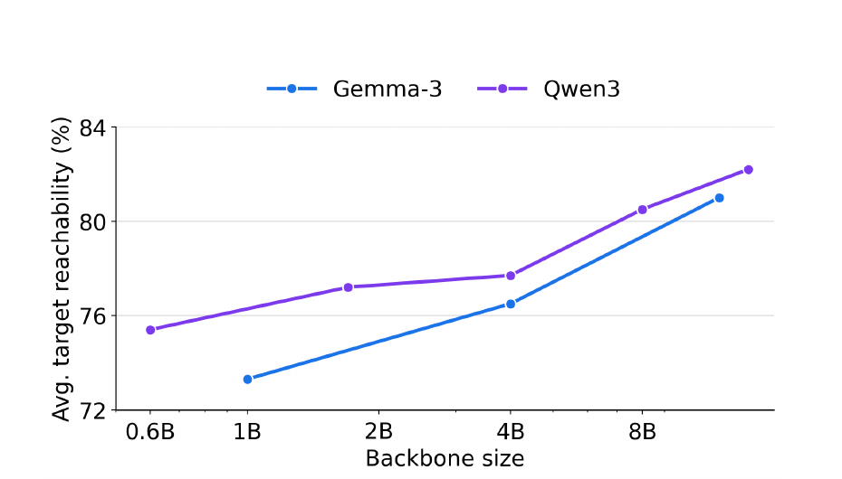

Describing unseen scenes
Scene captioning was not a training task; these are qualitative examples.


Language-controlled driving depends on connecting instructions to road geometry and the motion of nearby agents. VectorLLM represents map and motion vectors as discrete tokens in a pretrained language model, so scene structure and text share one sequence. The model uses that sequence to answer questions and generate trajectories. On WOMD and nuScenes, it improves driving question answering and follows held-out changes to scenes and instructions. Comparisons with continuous scene representations show that the discrete token interface contributes to these gains.
Scene captioning was not a training task; these are qualitative examples.
VectorLLM converts map polylines and vehicle histories into ordered displacement vectors, then quantizes them into a vocabulary of 1,024 scene tokens. These tokens are added to a pretrained decoder-only language model and placed in the same sequence as the question or instruction. The model generates a language answer or future trajectory from this shared context, without a separate scene encoder or projection module.
Acc@1.0m measures QA accuracy within one meter. Counterfactual reachability is open-loop best-of-six: a prediction succeeds when one trajectory comes within one meter of the annotated target at its evaluation horizon.
| Method | Modality | Acc@1.0m | ROUGE |
|---|---|---|---|
| Motion-LLaVA | HD map | 56.2% | 0.792 |
| VectorLLM | HD map | 61.0% | 0.804 |
| Method | Modality | H0 | H1 | Overall accuracy |
|---|---|---|---|---|
| LLaMA-AdapV2 | Vision | 15.1% | 4.8% | 9.6% |
| LLaVA1.5 | Vision | 25.7% | 41.5% | 26.2% |
| OpenDriveVLA-0.5B | Vision | 62.3% | 56.5% | 58.4% |
| VectorLLM | HD map | 69.9% | 60.4% | 63.5% |
| VectorLLM + MapTR | Vision (MapTR) | 61.7% | 55.9% | 57.8% |
H0 and H1 denote zero-hop and one-hop questions. Methods use different input modalities.
| Method | Modality | Lane edits | Agent edits | Ego-history edits | Overall |
|---|---|---|---|---|---|
| MTR | HD map | 47.0% | 52.0% | 61.0% | 53.3% |
| M2I | HD map | 39.0% | 35.0% | 18.0% | 30.7% |
| VectorLLM | HD map | 65.0% | 60.0% | 69.0% | 64.7% |
| VectorLLM + MapTR | Vision (MapTR) | 61.5% | 57.0% | 63.0% | 60.5% |
Values are open-loop best-of-six target reachability at a 1.0 m tolerance.
| Method | Modality | Language instruction | Average | At 1 s | At 2 s | At 3 s |
|---|---|---|---|---|---|---|
| VectorLLM | HD map | No | 29.8% | 49.0% | 30.5% | 10.0% |
| CTG++ | HD map | Yes | 15.0% | 31.5% | 11.0% | 2.5% |
| iMotion-LLM | HD map | Yes | 68.3% | 80.0% | 71.5% | 53.5% |
| VectorLLM | HD map | Yes | 76.0% | 93.5% | 80.0% | 64.5% |
| VectorLLM + MapTR | Vision (MapTR) | Yes | 71.8% | 89.0% | 78.5% | 58.0% |
Values are open-loop best-of-six target reachability at a 1.0 m tolerance.
| Method | Modality | WOMD QA | Scene edits | Language steering |
|---|---|---|---|---|
| VectorLLM | HD map | 61.0% | 64.7% | 76.0% |
| GameFormer + Qwen | HD map | 51.3% | 54.0% | 46.3% |
| Token Encoder + Qwen | HD map | 47.6% | 39.3% | 50.7% |
QA is WOMD-Reasoning Acc@1.0m; the other columns are average best-of-six reachability.
| Setting | WOMD QA Acc@1.0m | ROUGE | Language steering | Scene edits |
|---|---|---|---|---|
| VectorLLM with full CoT | 61.0% | 0.804 | 76.0% | 64.7% |
| With corrupted CoT | 53.7% | 0.715 | 70.3% | 60.7% |
| Without CoT | 51.2% | 0.712 | 66.7% | 58.0% |

The scene stays fixed as the requested maneuver changes; the predicted path and attended scene locations change with the instruction.


VectorLLM expects vectorized maps and agent histories. Its counterfactual evaluations measure open-loop waypoint reachability rather than closed-loop driving safety. Attention visualizations and scene captions are qualitative examples, not causal explanations or scored benchmarks.